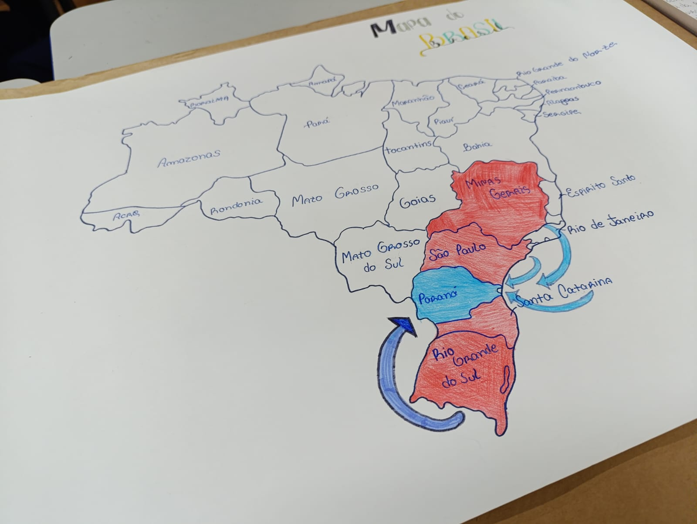
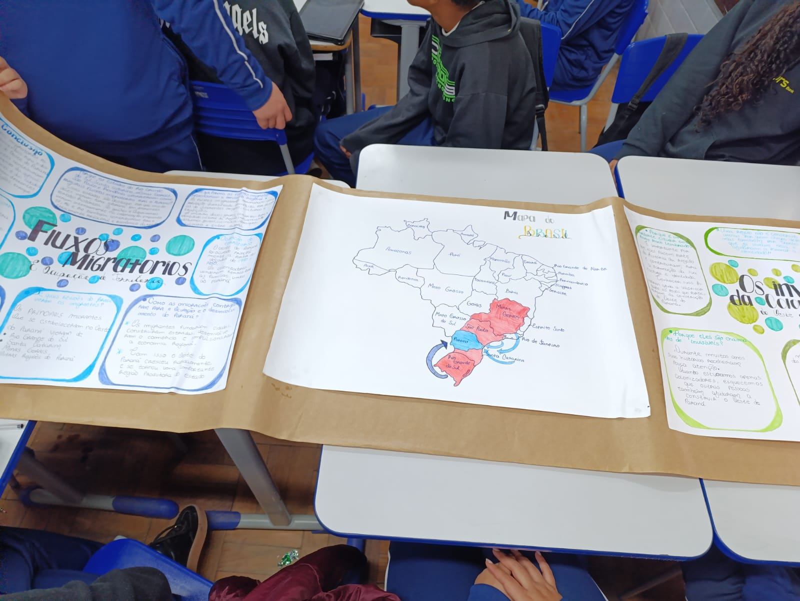
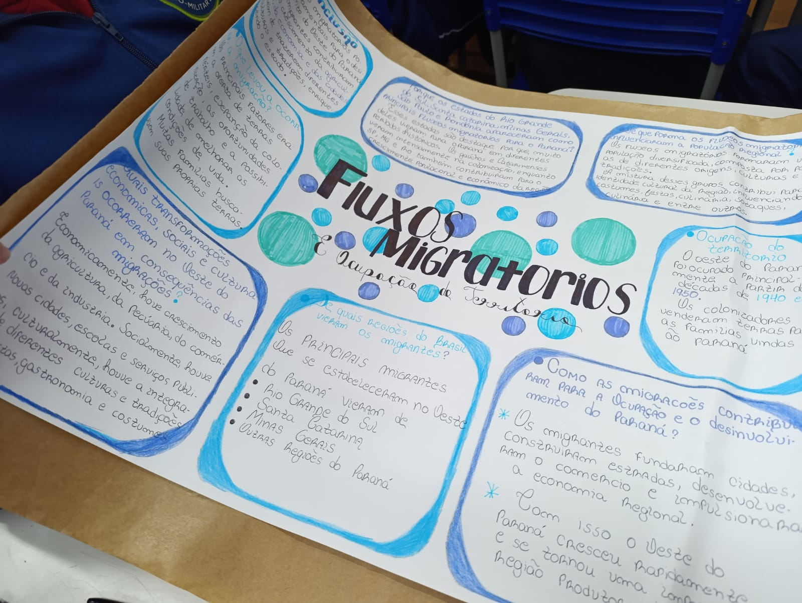

Este site foi elaborado com base no projeto IFA – Itinerário Formativo Aprofundado, da SEED-PR,
com uma proposta interdisciplinar entre História (Lauremi), Geografia (Maicol) e Arte (Karina). O objetivo é compreender a colonização
do Oeste do Paraná por meio do estudo dos acontecimentos históricos, das transformações do território e
das manifestações culturais que ajudam a preservar a memória e a identidade da região.
GEOGRAFIA
No contexto do IFA – Itinerário Formativo Aprofundado, a disciplina de Geografia é fundamental
para compreender o processo de colonização do Oeste do Paraná e as transformações ocorridas no espaço
regional ao longo do tempo. O estudo do território, das paisagens, do relevo, da hidrografia e do uso
da terra permite analisar como a ocupação humana modificou o ambiente e contribuiu para a formação dos
municípios e das atividades econômicas da região.
Integrada à História e à Arte, a Geografia favorece uma visão interdisciplinar sobre a construção
do Oeste paranaense, relacionando os movimentos migratórios, a organização do espaço rural e urbano e as
diferentes formas de interação entre sociedade e natureza. Assim, a disciplina contribui para
desenvolver nos estudantes uma compreensão crítica do espaço geográfico e da importância da preservação
ambiental e cultural da região.



ARTE
No contexto do IFA – Itinerário Formativo Aprofundado, a disciplina de Arte
contribui para a valorização da memória, da identidade e das expressões
culturais presentes na colonização do Oeste do Paraná. Por meio de fotografias, desenhos,
arquitetura, artesanato, música e outras manifestações artísticas, os estudantes podem
compreender como os diferentes povos que ocuparam a região deixaram marcas culturais que
fazem parte da história local. A Arte, integrada à História e à Geografia, possibilita interpretar
as transformações do território e reconhecer a diversidade cultural do Oeste paranaense. Dessa
forma, o ensino de Arte no IFA fortalece o sentimento de pertencimento, incentiva a preservação
do patrimônio cultural e promove uma aprendizagem mais significativa e interdisciplinar.
HISTÓRIA
No contexto do IFA – Itinerário Formativo Aprofundado, a disciplina de História possibilita compreender
o processo de colonização do Oeste do Paraná, analisando os movimentos migratórios, a ocupação do território
e a formação das comunidades que deram origem aos municípios da região. O estudo histórico permite reconhecer
a participação de diferentes grupos sociais, suas tradições, modos de vida e contribuições para a construção
da identidade regional.
Em diálogo com a Geografia e a Arte, a História favorece uma abordagem interdisciplinar que relaciona os acontecimentos
do passado às transformações do espaço e às manifestações culturais preservadas pela população. Dessa forma, a disciplina
contribui para valorizar a memória coletiva, fortalecer o sentimento de pertencimento e incentivar a preservação do
patrimônio histórico e cultural do Oeste paranaense.